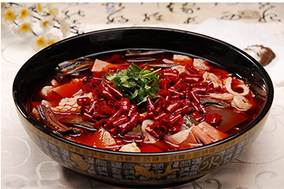

中华美食
世界这么大，美食那么多，不吃起来，怎对得起大好青春！
地址：重庆市南岸区崇文路2号
电话：18555556435

重庆不止有火锅、小面，毛血旺也绝对是不能错过的美食。每家做法基本相同：把鸭血等杂碎、蔬菜用麻辣汤底煮熟后，撒上葱花，花椒面，滚烫的油再泼在面上，端上桌热油还在盆里哧哧啦啦响，满桌顿时弥漫这浓浓的麻香味。
毛血旺的血特别嫩，轻轻一搅就碎了。爽嫩的猪血从嘴里滑过喉咙，进到胃里，瞬间觉得这碗毛血旺真棒
中华美食
世界这么大，美食那么多，不吃起来，怎对得起大好青春！
地址：重庆市南岸区崇文路2号
电话：18555556435
达人点评
毛血旺
源于重庆磁器口，是重庆小吃，这道菜是将生血旺现烫现吃，遂取名毛血旺，毛血旺的名气已引领川菜大军，席卷了大江南北。毛血旺通常用猪血加些配料如鸭肠、泥鳅、火腿肠、午餐肉、鸭肚、猪心、豆芽等制作而成。毛血旺以鸭血为制作主料，毛血旺的烹饪技巧以煮菜为主，口味属于麻辣味。